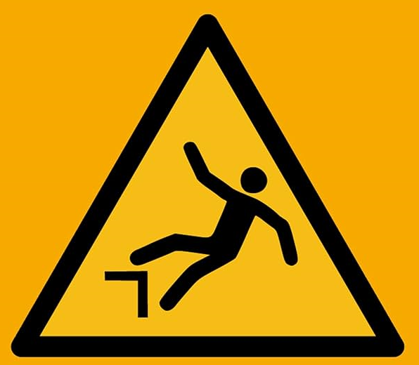
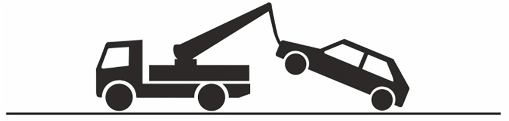

Warnung!
Absturzgefahr

📅 29.11.2025
⏱️ 18:00 - 08:00 Uhr
📍 Graurheindorfer Str. 5, 53111 Bonn

Es ist endlich so weit: Nach langen Renovierungsarbeiten* ist meine erste eigene Wohnung endlich begehbar und das muss gefeiert werden!
Es steht also eine Nachtschicht an: Holt eure Warnwesten, Helme und Baustellenschilder raus, denn das Motto ist dieses Mal das gewünschte Kontrastprogramm zur Glitzer-Party ✨ (Bauarbeiter-Dekolletee gibt Extrapunkte 👷♂️)
Anlass Nr. 2:
Ihr wart an meinem letzten Geburtstag nicht ausgeladen, sondern ich konnte in Ermangelung einer fertigen Wohnung nicht feiern! Bevor es schon wieder herum ist, würde ich gerne den Beginn meines 28. Lebensjahrs mit euch feiern 🎂🍾
Anlass Nr. 3:
Falls ihr euch dachtet "Oh nein, genau an dem Tag wollte ich meine Lieblingsband Monkey Jack bei ihrem Konzert in Bonn sehen", ist das gar kein Problem, denn es gibt noch TICKETS und ich freue mich über jeden, der erst zum Konzert geht und danach mit den Bandmitgliedern höchstpersönlich in die Graurheindorfer Straße rüberwandert, wo auch die offizielle Monkey Jack After Party stattfindet 😎🤘🎸⚡
Ihr seht also, es gibt jede Menge zu tun. Können wir das schaffen?
Wie auf jeder guten Baustelle werden Spaßgetränke und Snacks gestellt 🍻
Bitte kommt, wann ihr wollt: Ich freue mich über euch, wenn ihr um 18 Uhr noch ein Stück Kuchen mit mir esst genauso, wie wenn ihr um Mitternacht zu einer Runde Ragecage kommt.
Bringt unbedingt euer +1 mit, denn: Viele Hände, schnelles Ende! 🧱👷♂️⛏️